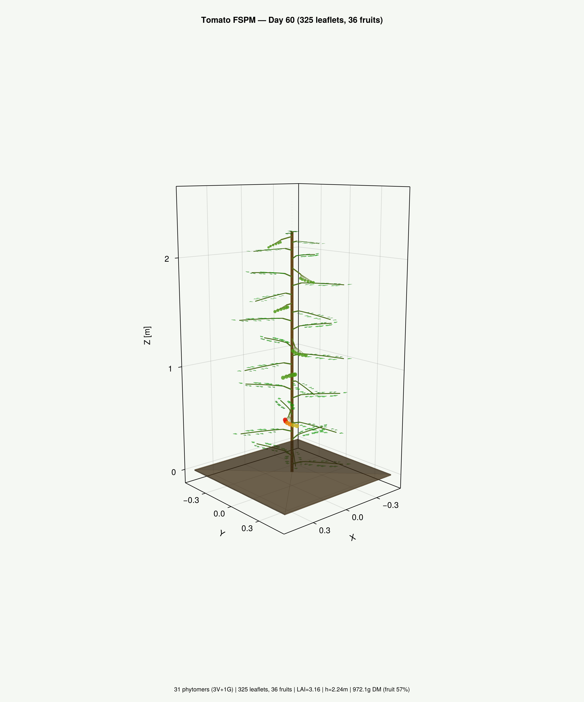
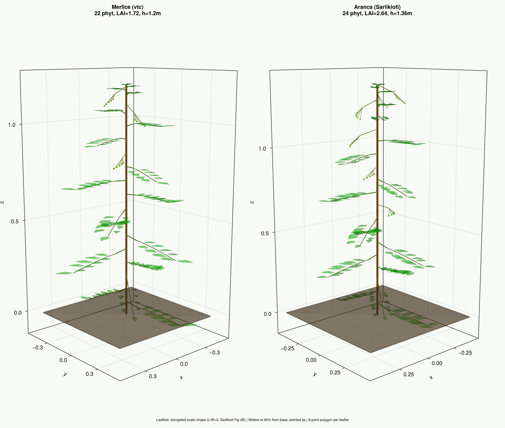
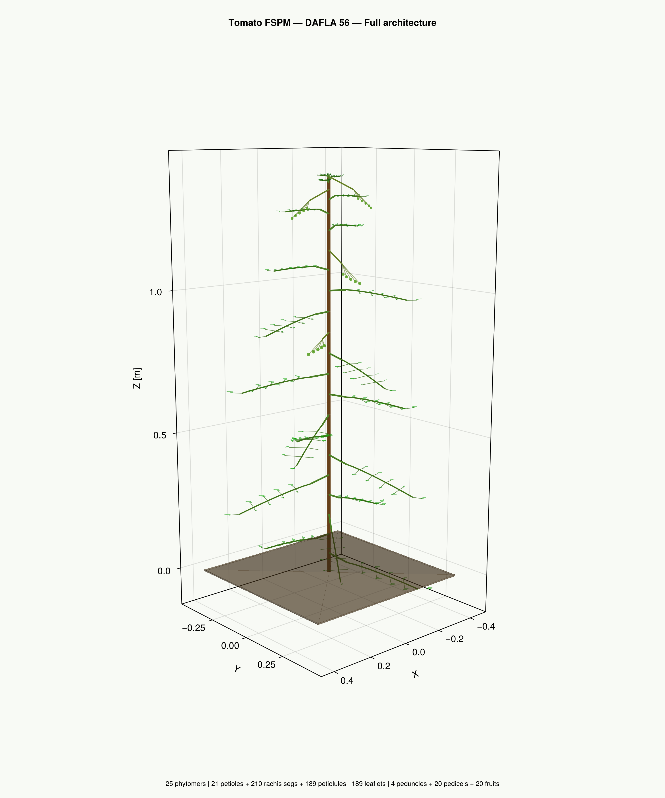
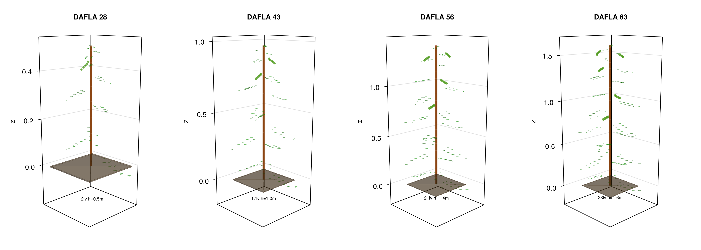
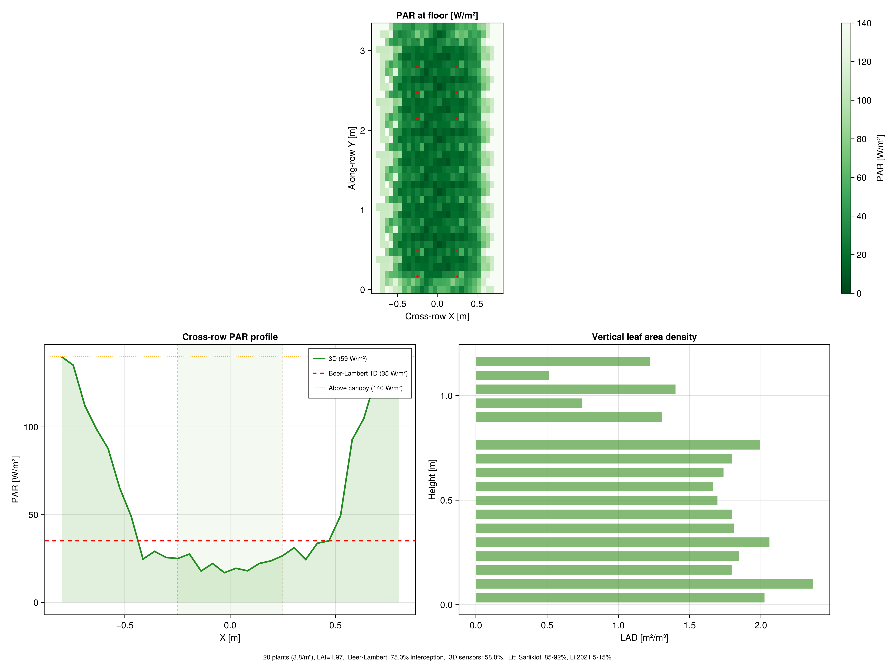

Tutorial: Tomato FSPM & Beer-Lambert 2D Correction
Tomato Functional-Structural Plant Model
GreenhousesJL includes a tomato FSPM based on the Wageningen school (Sarlikioti et al. 2011, de Visser et al. 2014, Smolekova et al. 2025). Parameters are calibrated from the open-source vtc model (github.com/ksmolen2/vtc, cultivar Merlice).
Architecture
- Sympodial growth: 8 initial vegetative phytomers, then 3V+1G repeat
- Phyllotaxis: 138.75° (vtc: PHYLLOTAXIS[MERLICE])
- Composite leaves: 3 leaflet pairs + terminal + intercalary = 9 leaflets
- Thermal time: T_base = 4°C, phyllochron = 37.9 °Cd
Running a simulation
using GreenhousesJL
# 60 days at 22°C, 12h photoperiod
T_series = fill(22.0, 60*24)
PAR_series = [mod(i,24) >= 6 && mod(i,24) < 18 ? 400.0 : 0.0 for i in 1:60*24]
plant, history = simulate_tomato(T_series, PAR_series, 1.0)
s = plant_summary(plant)Results at 60 days (22°C)
| Metric | Value | Literature |
|---|---|---|
| Phytomers | 30 | 27-36 |
| LAI | 2.88 | 2.7-3.6 |
| Height | 1.73 m | 2.0-2.5 m |
| Canopy diameter | 0.84 m | 0.80-1.20 m |
| Fruit fraction | 55% | 50-65% (Heuvelink) |

60-day tomato: stem (brown), compound leaves with ovate leaflets (green), fruit trusses with ripening gradient (red/orange/green).



Beer-Lambert 2D Row Correction
Standard Beer-Lambert assumes uniform canopy and overestimates interception by 11 pp for row crops. The 2D correction accounts for row structure.
The problem
| Model | Interception | Error vs measured |
|---|---|---|
| Beer-Lambert 1D (K=0.7) | 88.2% | +11.2 pp |
| Sarlikioti measured (SunScan) | 77.0% | ref |
The 2D-penumbra model
The canopy cross-section is modeled as a Gaussian profile:
\[LAI_{local}(x) = LAI_{peak} \times \exp\left(-\frac{(x - x_{row})^2}{2\sigma^2}\right)\]
where $\sigma = w_{canopy} / 3$ (95% of leaf area within canopy width).
The mean floor transmission integrates across the module:
\[\tau_{2D} = \frac{1}{w_{module}} \int_{-w/2}^{w/2} \exp(-K \times LAI_{local}(x))\, dx\]
Key insight: use canopy diameter, not stem spacing
The row_width parameter must be the actual canopy diameter (measurable or from FSPM), not the stem spacing:
rg = RowGeometry(
canopy_diameter, # NOT stem spacing!
module_width - canopy_diameter, # actual light corridor
canopy_height,
:NS
)
i_2d = interception_2d_penumbra(LAI, rg, K=0.70)Validation results (Sarlikioti spacing, LAI≈3.1)
| Model | Interception | Δ vs measured 77% |
|---|---|---|
| Beer-Lambert 1D | 88.2% | +11.2 pp |
| BL 2D penumbra (canopy diam) | 77.6% | +0.6 pp |
| FSPM 3D sensors | 74.9% | -2.1 pp |
| Sarlikioti measured | 77.0% | ref |
The 2D correction reduces the error from 11.2 pp to 0.6 pp, a 95% improvement.

Top: PAR heatmap at floor level showing row structure. Bottom left: cross-row PAR profile comparing 1D (red) vs 3D sensors (green). Bottom right: vertical leaf area density profile.
Extinction coefficient K
K is not a universal constant, it depends on cultivar, growth stage, and row geometry:
| Source | K measured | Method |
|---|---|---|
| Higashide (2020) Ringyoku | 0.72 | PPFD 5 heights |
| Higashide (2020) Managua | 0.77 | PPFD 5 heights |
| Higashide (2020) Momotaro | 0.99 | PPFD 5 heights |
| Higashide (2009) modern Dutch | 0.57 | Line sensor |
| Higashide (2009) old Dutch | 0.85 | Line sensor |
| Wiechers (2014) day 28 | 0.71 | 1m² sensors |
| Wiechers (2014) day 63 | 0.45 | 1m² sensors |
| Sarlikioti (2011) implicit | 0.48 | SunScan |
| Our FSPM calibrated | 0.45 | Analytical 3D |
Recommendation: Use K=0.50 for modern cultivars in vegetative stage. K decreases as canopy develops (Wiechers 2014: 0.71→0.45 over 35 days).
PlantBiophysics coupling
Each leaflet has per-organ conditions for FvCB photosynthesis:
pb_leaflets = tomato_leaflets_to_pb(plant, 22.0, 400.0, NoPanel())
# → 325 leaflets, each with :PPFD, :Jmax, :position, :opticsOptical properties are consistent (ρ+τ+α=1) across GreenhousesJL, VPL, and PlantBiophysics.
References
- Sarlikioti, de Visser & Marcelis (2011). Annals of Botany 107(5). doi:10.1093/aob/mcr006
- de Visser, Buck-Sorlin & van der Heijden (2014). Front. Plant Sci. 5:48. doi:10.3389/fpls.2014.00048
- Smolekova et al. (2025). in silico Plants 7(2). doi:10.1093/insilicoplants/diaf022
- Higashide et al. (2020). Hort. Journal 89(4). doi:10.2503/hortj.UTD-171
- Wiechers et al. (2014). J. Exp. Bot. 65(22). doi:10.1093/jxb/eru356
- Li et al. (2021). in silico Plants 3(2). doi:10.1093/insilicoplants/diab031
- Charles-Edwards & Thorpe (1976). Annals of Botany 40:603-613